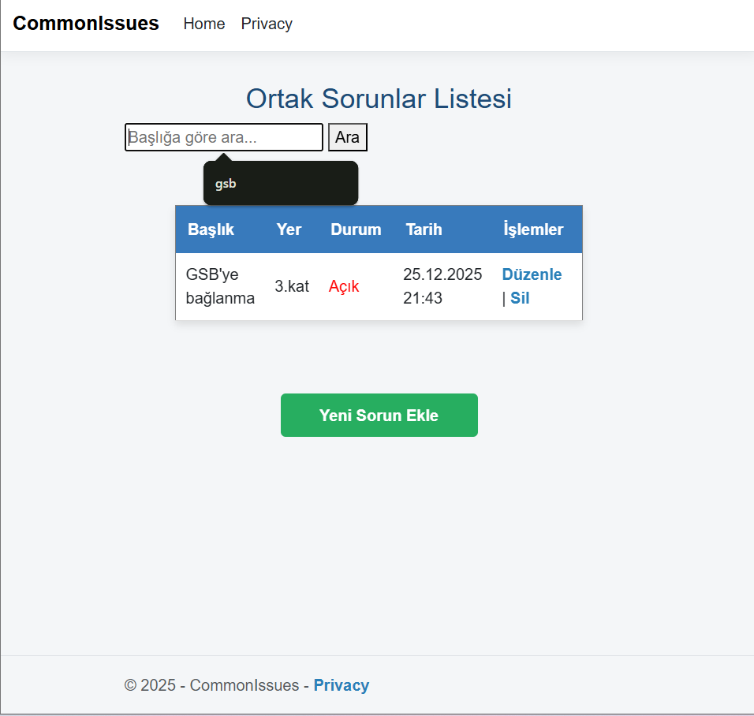
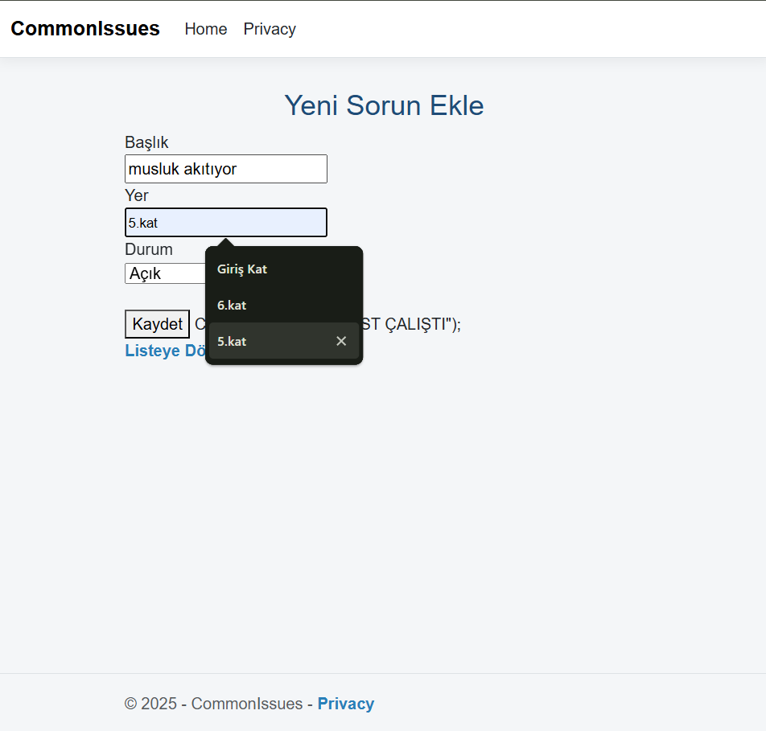
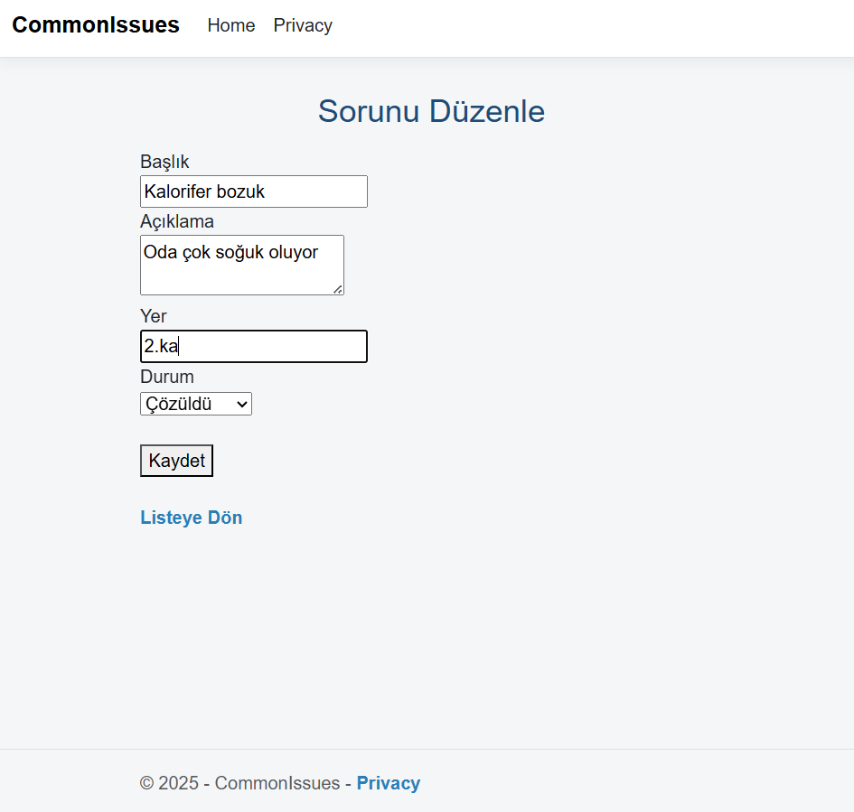
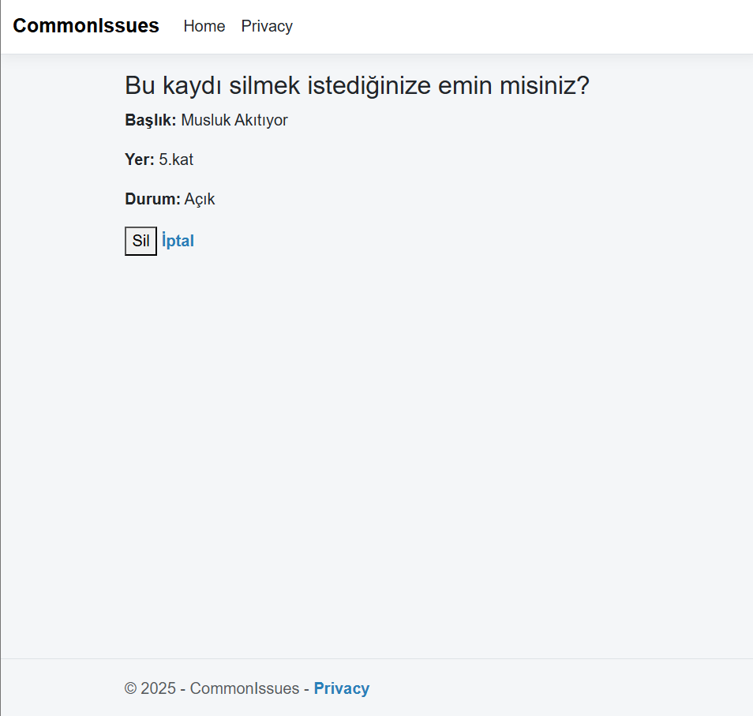
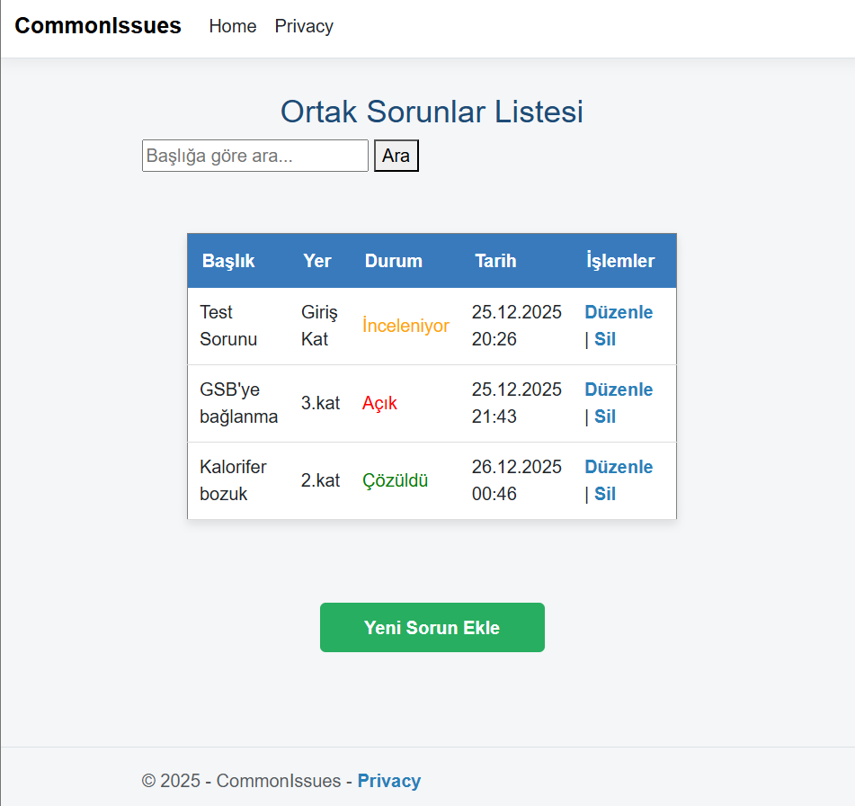

1. İlk Görünüm
Uygulama açıldığında kullanıcıya görünen ana sayfa.

Bu proje Web Programlama dersi final ödevi kapsamında geliştirilmiştir. ASP.NET MVC ve SQL Server kullanılarak hazırlanmıştır.
Uygulama açıldığında kullanıcıya görünen ana sayfa.
Kullanıcı mevcut sorunları arayabilir ve listeleyebilir.
Kullanıcı yeni bir sorun eklemek için formu doldurur.
Kullanıcı mevcut bir sorunu güncelleyebilir.
Kullanıcı mevcut bir sorunu silebilir.
Uygulamanın son durumu ve listeleme sayfasının görünümü.
Bu proje GitHub Pages kullanılarak canlı yayına alınmıştır. ASP.NET MVC backend işlemleri GitHub Pages tarafından desteklenmediği için, uygulamanın çalışması yerel ortamda (localhost) yapılmıştır. Buradaki ekran görüntüleri, uygulamanın işleyişini ve sayfa yapısını göstermektedir.
Öğrenci: Feyzanur Halıcı